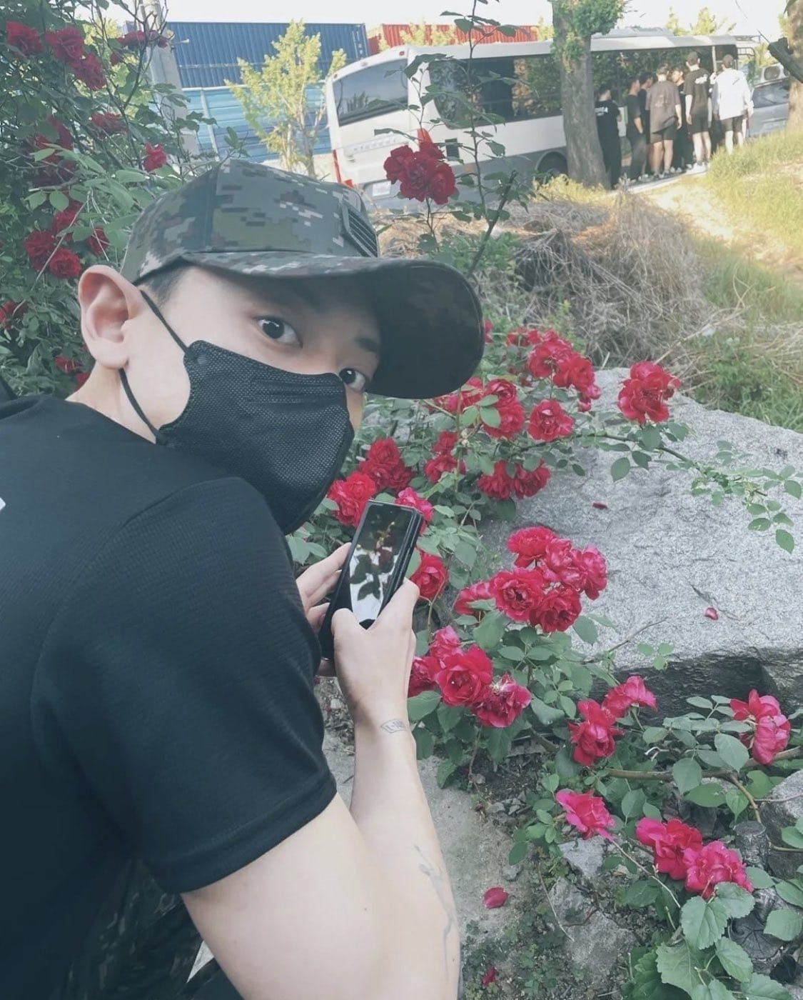

Park Chanyeol adalah seorang penyanyi, rapper, penulis lagu, aktor, dan model asal Korea Selatan. Ia lahir pada tanggal 27 November 1992 di Seoul, Korea Selatan.
Chanyeol pertama kali dikenal sebagai anggota grup musik laki-laki Korea Selatan-Tiongkok populer, EXO, yang debut pada tahun 2012 di bawah label SM Entertainment. Ia merupakan salah satu anggota rap dan vokal di dalam grup tersebut dan memegang peran penting dalam beberapa lagu EXO.
Selain karirnya di EXO, Chanyeol juga aktif sebagai penyanyi solo. Ia merilis lagu-lagu solo seperti "SSFW" dan "Minimal Warm" serta mengisi soundtrack untuk beberapa drama Korea, seperti "Stay With Me" untuk drama "Goblin" dan "I'm Yours" untuk drama "Dr. Romantic 2".
Chanyeol juga telah memulai karir aktingnya dan telah muncul di beberapa drama televisi, termasuk "Missing 9" dan "Memories of the Alhambra". Ia juga menjadi pemain utama dalam film aksi "The Box" yang dirilis pada tahun 2021.
Selain itu, Chanyeol juga dikenal sebagai seorang model dan telah bekerja sama dengan merek-merek terkenal seperti Tommy Hilfiger dan Calvin Klein.
Chanyeol juga dikenal sebagai sosok yang dermawan dan aktif dalam kegiatan sosial. Ia telah berpartisipasi dalam berbagai kegiatan amal dan menjadi duta untuk kampanye anti-bullying dan kampanye lingkungan.
Dalam hal pendidikan, Chanyeol menghadiri Sekolah Menengah Atas Hyundai Chungun di Seoul dan belajar di Institut Seni Kyung Hee University, di mana ia mendalami bidang musik dan memperoleh gelar sarjana dalam bidang seni.
Secara keseluruhan, Park Chanyeol dikenal sebagai seorang artis multitalenta yang memiliki bakat dalam musik, akting, dan modeling serta memiliki sikap yang baik dan dermawan.